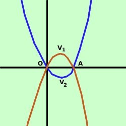

Disegniamo prima la parabola di equazione
y= x2
- 2x
Troviamo prima le coordinate del vertice V1
| V= (
|
b
-  ; ;
2a
|
b2-4ac
- )
4a
|
abbiamo
a = 1
b = -2
c = 0
quindi
| V1= (
|
(-2)
- ;
2·1
|
(-2)2-4·1·0
- )
4·1
|
Intersezioni con gli assi
- Intersezioni asse x: faccio il sistema fra l'asse x (y=0) e
l'equazione della parabola
 y = 0
y = 0
y= x2
- 2x
y = 0
x2
- 2x = 0
risolvo l'equazione di secondo
grado spuria ed ottengo
x1 = 0
x2 = 2
quindi i punti di intersezione con l'asse delle x sono
O=(0,0) A=(2,0)
- Intersezioni asse y: e' il punto (0,0) gia' trovato
Disegniamo ora la parabola di equazione
y= -x2
+ 2x
Siccome la seconda equazione si ottiene dalla prima scambiando y
con -y la seconda parabola sara' la simmetrica della prima rispetto all'asse x
Troviamo prima le coordinate del vertice V2
| V= (
|
b
- ;
2a
|
b2-4ac
- )
4a
|
abbiamo
a = -1
b = 2
c = 0
quindi
| V2= (
|
2
- ;
2·(-1)
|
(2)2-4·(-1)·0
- )
4·(-1)
|

Intersezioni con gli assi
- Intersezioni asse x: faccio il sistema fra l'asse x (y=0) e
l'equazione della parabola
y = 0
y= -x2
+ 2x
y = 0
-x2
+ 2x = 0
risolvo l'equazione di secondo
grado spuria ed ottengo
x1 = 0
x2 = 2
quindi i punti di intersezione con l'asse delle x sono
O=(0,0) A=(2,0)
- Intersezioni asse y: e' il punto (0,0) gia' trovato
Possiamo dire di avere gia' trovato i punti di intersezione delle due parabole:
sono i due punti di intersezione con l'asse delle x
Adesso congiungo i punti con una curva continua ed ottengo il grafico delle
parabole
Anche se non sembra dall'orrendo grafico che ho fatto le due
parabole sono simmetriche (simmetria assiale): posso ottenere la seconda
parabola ribaltando la prima attorno all'asse x. (fare link quando
sviluppo simmetria)
|